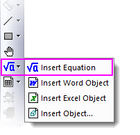
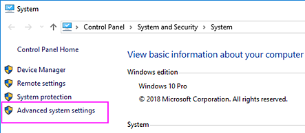
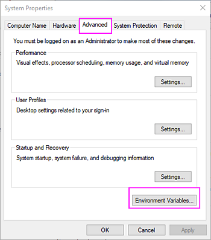
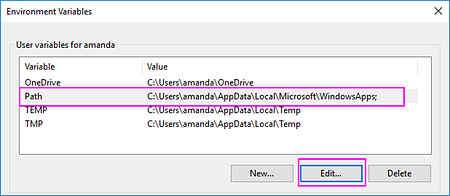
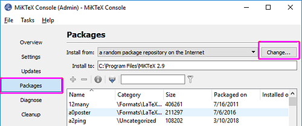
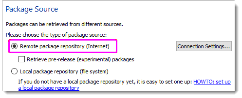

FAQ-982 Wenn ich die LaTex App verwende, wird mir ein Fehler angezeigt. Was soll ich tun?
LaTeX-APP-Error-Troubleshoot
Letztes Update: 29.03.2023
 |
Origin 2023b enthält ein SVG-basiertes LaTeX-Gleichungstool. Dieses neue Hilfsmittel LaTeX-Gleichung einfügen erfordert kein manuelles Installieren von zusätzlichen Bibliotheken oder Softwares durch die Anwender. Um Probleme, die durch die App LaTeX entstehen, loszuwerden, ist ein Upgrade auf Version 2023b oder höher sehr empfehlenswert, um das Hilfsmittel LaTeX-Gleichung einfügen auszuprobieren. Weitere Informationen finden Sie in diesem Dokument.

|
Falls Sie weiterhin mit der App LaTeX arbeiten möchten und Sie beim Einfügen von LaTeX-Zeichen die folgende Fehlermeldung angezeigt bekommen:
Origin failed to update MiKTeX packages. (Origin kann MiKTeX-Pakete nicht aktualisieren.) Please make sure internet access is available. (Bitte stellen Sie sicher, dass Zugriff auf das Internet verfügbar ist.) If problem persists, try increasing the timeout value using @LTXTP (units sec). (Falls das Problem weiterhin besteht, versuchen Sie den Timeout-Wert mit Hilfe von @LTXTP (Einheiten s) zu erhöhen.:
Versuchen Sie die folgenden Schritte.
Methode 1: Erhöhen des Wert für die Zeitüberschreitung mit Hilfe von @LTXTP
Öffnen Sie den Dialog Systemvariablen festlegen über Einstellungen: Systemvariable. Geben Sie LTXTP' in die Spalte Variable ein (kein vorstehendes "@") und setzen Sie ihren Wert auf 600 oder 1000 oder sogar höher. Dies erhöht den Wert für die Zeitüberschreitung für die Verbindung zum Server und den Download der MiKTeX-Pakete, wenn Sie auf die Schaltfläche Retry/Erneut versuchen klicken, falls Origin ihn nicht erkennt
Methode 2: Manuelles Installieren des 'url'-Pakets
- Navigieren Sie zum Installationsordner von MiKTeX. Der Standardpfad für ein 64-Bit-Windows-Betriebssystem lautet C:\Program Files\MiKTeX 2.9\miktex\bin\x64\.
- Öffnen Sie das Befehlseingabefenster und geben Sie den Pfad zum MiKTeX-Installationsordner an. Ausführen
mpm --install=url
Die Meldung: "Package url is correctly installed." sollte ausgegeben werden.
- Öffnen Sie Origins Anwenderdateiordner und löschen Sie OLaTex.ini, falls es sie gibt.
Methode 3: Falls Sie mehrere Tex -Pakete installiert haben, das 'url'-Paket manuell installieren
Die LaTex App schlägt fehl, wenn mehrere TeX-Pakete installiert sind.
Wenn Sie zum Beispiel beides installiert haben, CTex und MiKTeX, können Sie die untenstehenden Schritte befolgen, um das Problem zu lösen:
- Klicken Sie mit der rechten Maustaste auf Mein Computer und wählen Sie im Menü Eigenschaften. Klicken Sie im geöffneten Dialog auf den Link Erweiterte Systemeinstellungen.
- 
- Gehen Sie im Dialog Systemeigenschaften zur Registerkarte Erweitert und klicken Sie auf die Schaltfläche Umgebungsvariablen.
- 
- Wählen Sie Pfad im oberen Feld und klicken Sie auf die Schaltfläche Bearbeiten. Versuchen Sie, "C:\CTEX\MiKTeX\miktex\bin;" zu finden, und löschen Sie es (suchen Sie bei einer anderen Software den entsprechenden Installationspfad). Der MiKTeX-Pfad dient als der korrekte Link zu Origin.
- 
- Klicken Sie mit der rechten Maustaste auf die MiKTeX-Konsole und führen Sie es als Administrator aus. Wählen Sie Packages/Pakete im linken Bedienfeld und klicken Sie auf die Schaltfläche Change/Ändern.
- 
- Wählen Sie im Dialog Package Source die Option Remote package repository(Internet) und klicken Sie auf Next.
- 
- Wählen im Remote Package Repository unter Country/Land: US und Host: ctan.mirrors.hoobly.com im letzten Teil.

- Klicken Sie auf Fertigstellen.
Methode 4: Installieren von MiKTeX für "Nur diesen Benutzer" anstatt für "Alle Benutzer"
- Klicken Sie mit der rechten Maustaste auf die MiKTeX-Konsole und führen Sie es als Administrator aus. Wählen Sie Packages/Pakete im linken Bedienfeld und klicken Sie auf die Schaltfläche Change/Ändern.
- Wählen Sie im Dialog Remote package repository(Internet) und klicken Sie auf Next/Weiter.
- Wählen Sie im Remote Package Repository unter Country/Land: US sowie Host: ctan.mirrors.hoobly.com.
- Klicken Sie auf Fertigstellen.
- Öffnen Sie das Befehlseingabefenster als Administrator. Geben Sie den Pfad zum MiKTeX-Installationsordner an wie C:\Program Files\MiKTeX\miktex\bin\x64\.
- Ausführen
mpm --install=zhmetrics mpm --install=url
Stichwörter:LaTex, MiKTeX, Zeitüberschreitung